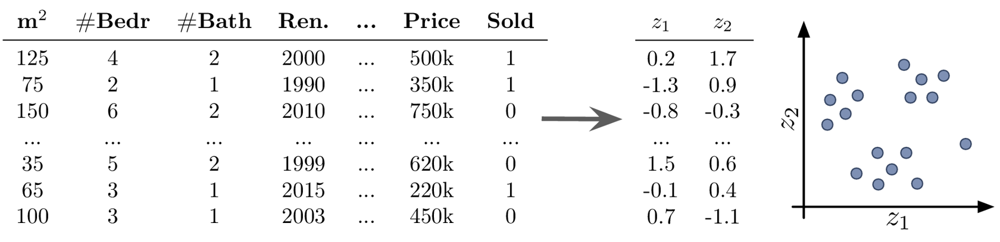
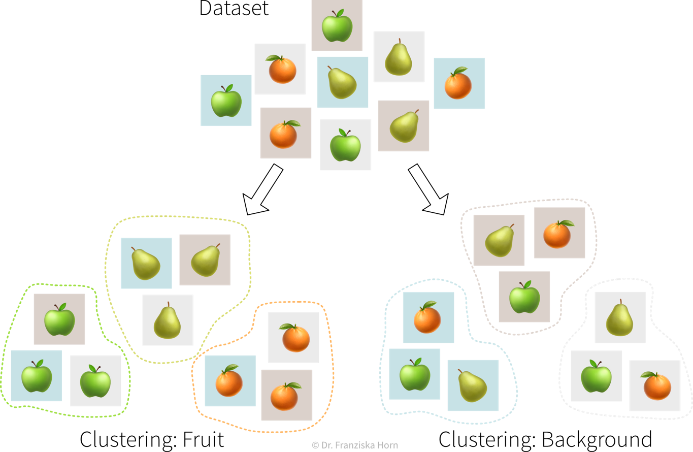

The Basics
This chapter provides a general introduction into what machine learning (ML) actually is and where it can – or should not – be used.
Data is the new oil!?
Let’s take a step back. Because it all begins with data. You’ve probably heard this claim before: “Data is the new oil!”. This suggests that data is valuable. But is it?
The reason why oil is considered valuable is because we have important use cases for it: powering our cars, heating our homes, and producing plastics or fertilizers. Similarly, our data is only as valuable as what we make of it. So what can we use data for?
The main use cases belong to one of two categories:

Insights
We can generate insights either through continuous monitoring (“Are we on track?”) or a deeper analysis (“What’s wrong?”).
By visualizing important variables or Key Performance Indicators (KPIs) in reports or dashboards, we increase transparency of the status quo and quantify our progress towards some goal. When a KPI is far from its target value, we can dig deeper into the data with an exploratory data analysis to identify the root cause of the problem and answer questions such as
- Why are we not reaching our goal?
- What should we do next?
However, as we‚Äôll discuss in more detail in the section on data analysis, arriving at satisfactory answers is often more art than science üòâ.
Automation
As described in the following sections, machine learning models can be used to automate ‘input → output’ tasks otherwise requiring a human (expert). These tasks are usually easy for an (appropriately trained) human, for example:
- Translating texts from one language into another
- Sorting out products with scratches when they pass a checkpoint on the assembly line
- Recommending movies to a friend
For this to work, the ML models need to be trained on a lot of historical data (e.g., texts in both languages, images of products with and without scratches, information about different users and which movies they watched).
The resulting software can then either be used to automate the task completely or we can keep a human in the loop that can intervene and correct the suggestions made by the model.
What is ML?
OK, now what exactly is this machine learning that is already transforming all of our lives?
First of all, ML is an area of research in the field of theoretical computer science, i.e., at the intersection of mathematics and computer science:

More specifically, machine learning is an umbrella term for algorithms that recognize patterns and learn rules from data.
Simply speaking, an algorithm can be thought of as a strategy or recipe for solving a certain kind of problem. For example, there exist effective algorithms to find the shortest paths between two cities (e.g., used in Google Maps to give directions) or to solve scheduling problems, such as: “Which task should be done first and which task after that to finish all tasks before their respective deadlines and satisfy dependencies between the tasks.” Machine learning deals with the subset of algorithms that detect and make use of statistical regularities in a dataset to obtain specific results.
Analogous to the tools used in a traditional manufacturing process to build something, you can think of ML algorithms as tools to generate value from data:

In order to successfully apply ML, you should ask yourself some important questions:
- What could be valuable? For example, this could be a new feature for an existing product, like Face ID as a new way to unlock your phone.
- What raw inputs are needed? We can’t build a wooden chair using only fabric and metal or a few twigs we found in the woods. Similarly, depending on what we want to achieve with ML, we also need the right data (quality & quantity) to apply the algorithms in the first place. This can be especially tricky since in most cases we can’t just buy the data we need like wood at a hardware store, but we have to collect it ourselves, i.e., grow our own trees, which can take some time.
- Which ML algorithm is the right tool for the task? (I.e., which category of ML algorithms produces the type of output we want?)
- Do I or my employees have the necessary skills and enough compute power to accomplish this in practice?
We can think of the different ML algorithms as our ML toolbox:

ML algorithms solve “input → output” problems
What all of these ML algorithms have in common, is that they solve “input → output” problems like these:

In the above examples, while a human (expert) could easily produce the correct output given the input (e.g., even a small child can recognize the cat in the first image), humans have a hard time describing how they arrived at the correct answer (e.g., how did you know that this is a cat (and not a small dog)? because of the pointy ears? the whiskers?). ML algorithms can learn such rules from the given data samples.
ML vs. traditional software
While traditional software solutions are used to automate tasks that can be formulated as a fixed, predefined sequence of actions, executed according to some hard-coded rules (e.g., “a gate should open if an object passes through a photoelectric barrier and 20 seconds later the gate should close again”), machine learning can be used to automate “input → output” tasks for which it would otherwise be difficult to come up with such rules.
For example, the quality control in a cookie factory is such an “input (cookie) → output (ok/defective)” task: While some broken cookies could be sorted out automatically by checking that each cookie weights around 15g, it would be difficult to formulate rules that reliably catch all possible defects. So either a human could watch the production line to additionally recognize, e.g., over-baked cookies, or one could take pictures of the cookies and use them as input for a machine learning model to recognize the defective cookies:

To solve this problem with ML, first a large dataset needs to be compiled with photos of many good, but also all kinds of defective cookies, including the corresponding annotations, i.e., a label for each picture whether it displays a good or defective cookie (not necessarily specifying the kind of defect). An ML algorithm can then learn to distinguish between good and defective cookies from these examples.
When (not) to use ML
ML is overkill if:
- a manually defined set of rules or mechanistic (white box) model can solve the problem. For example, if in our example cookie factory broken cookies were the only quality problem that ever occurred, then the rule “cookie weight needs to be between 14-16g” would suffice to detect defective cookies. And such a rule is easier to implement as there is no need to collect a large dataset.
ML is your best chance when:
- humans are overwhelmed by very complex, high dimensional data. For example, given an excel spreadsheet with hundreds of columns, a human can’t easily recognize any patterns in this sea of numbers. In the worst case, there actually aren’t any relationships in the data that could be discovered (maybe we didn’t measure all the relevant factors), but if there are, ML will most likely find them.
ML has great potential when:
- an exact simulation with a mechanistic model takes too long (but can be used to generate a high quality dataset). For example, the AlphaFold model shown in the introduction, which is used to predict the 3D structure of a protein from its amino acid sequence, can be trained on the data generated by the original simulation model used to solve this task before, which is too slow to be applied to a large number of proteins.
- solving a “simple” but hard to explain task that takes a human ~1 second, like recognizing something in an image.
⇒ Use ML to automate repetitive tasks & make expert knowledge available to everyone, e.g., Google’s diabetic retinopathy diagnostic model shown in the first section.
But: success depends on data quality & quantity!
→ Humans are much better at generalizing from a few examples. For example, a doctor can still easily recognize the disease even if the pictures were taken with a slightly different setup that might result, for example, in noisier images. The ML model, on the other hand, needs to be specifically trained for these cases, which means that in the worst case we might need to collect a lot of additional data for this new setup.
Use ML only when occasional errors are acceptable. ML models are typically trained on human-generated data, which is prone to noise since even experts may disagree on certain cases. Additionally, ML models may need to extrapolate, predicting outcomes for new data points that differ from the training data, leading to potential inaccuracies. To minimize errors, keeping a human in the loop to periodically review the predictions made by the ML model can be beneficial.
How do machines “learn”?
How do ML algorithms solve these “input → output” problems, i.e., how do they recognize patterns and learn rules from data?
The set of ML algorithms can be subdivided according to their learning strategy. This is inspired by how humans learn:

Analogously, machines can also learn by following these three strategies:

Data requirements for learning according to these strategies:
Unsupervised Learning: a dataset with examples

Supervised Learning: a dataset with labeled examples

Reinforcement Learning: a (simulation) environment that generates data (i.e., reward + new state) in response to the agent’s actions

With its reliance on a data-generating environment, reinforcement learning is a bit of a special case. Furthermore, as of now it’s still really hard to get reinforcement learning algorithms to work correctly, which means they’re currently mostly used in research and not so much for practical applications.
Supervised Learning
Supervised learning is the most common type of machine learning used in today’s applications.
The goal here is to learn a model (= a mathematical function) \(f(x)\) that describes the relationship between some input(s) \(x\) (e.g., different process conditions like temperature, type of material, etc.) and output \(y\) (e.g., resulting product quality).
This model can then be used to make predictions for new data points, i.e., compute \(f(x') = y'\) for some new \(x'\) (e.g., predict for a new set of process conditions whether the produced product will be of high quality or if the process should be stopped to not waste resources).
Supervised Learning in a nutshell:

Features & Labels
A production process, where we want to predict whether a produced part is scrap given certain production conditions, is an example of a typical supervised learning problem. Here, the collected data for each produced part includes the process conditions under which it was produced, as well as the outcome, i.e., whether the product was okay or scrap:


In the supervised learning setup, the features are used as the input to the model, while the labels constitute the target variable, i.e., the predicted output. Generally, features should be independent variables (e.g., settings that the operator can choose as he wishes), while the target value should be dependent on these inputs – otherwise we can’t predict it from these inputs alone.
“Learning” a model from the data
Goal: Describe the relationship between input(s) \(x\) and output \(y\) with a model, i.e., a mathematical function \(f(x)\)

Select a model class (= structure of the function): Assumption: relationship is linear
→ linear regression model: \(y = f(x) = b + w\cdot x\)Define an objective: Minimize error between true & predicted \(y\):
→ \(\min_{b,w} \sum_i (y_i - f(x_i))^2\)Find best model parameters given the data: i.e., solve the optimization problem defined in step 2
⇒ \(f(x) = -2.7 + 5.2x\)
The available supervised learning algorithms differ in the type of \(x \to y\) relationship they can describe (e.g., linear or nonlinear) and what kind of objective they minimize (also called loss function; an error computed on the training data, quantifying the mismatch between true and predicted labels). The task of a data scientist is to select a type of model that can optimally fit the given data. The rest is then taken care of by an optimization method, which finds the parameters of the model that minimize the model’s objective, i.e., such that the model’s prediction error on the given data is as small as possible.
In most of the book, the terms “ML algorithm” and “ML model” will be used interchangeably. To be more precise, however, in general the algorithm processes the data and learns some parameter values. These parameter settings define the final model. For example, a linear regression model is defined by its coefficients (i.e., the model’s parameters), which are found by executing the steps outlined in the linear regression algorithm, which includes solving an optimization problem.
Don’t stop there!

Predictive Analytics
By feeding historical data to a supervised learning algorithm, we can generate a predictive model that makes predictions about future scenarios to aid with planning.
Example: Use sales forecasts to better plan inventory levels.
Interpreting Predictive Models
Given a model that makes accurate predictions for new data points, we can interpret this model and explain its predictions to understand root causes in a process.
Example: Given a model that predicts the quality of a product from the process conditions, identify which conditions result in lower quality products.
What-if Analysis & Optimization
Given a model that makes accurate predictions for new data points, we can use this model in a “what-if” forecast to explore how a system might react to different conditions to make better decisions (but use with caution!).
Example: Given a model that predicts the remaining lifetime of a machine component under some process conditions, simulate how quickly this component would deteriorate if we changed the process conditions.
Going one step further, this model can also be used inside an optimization loop to automatically evaluate different inputs with the model systematically to find optimal settings.
Example: Given a model that predicts the quality of a product from the process conditions, automatically determine the best production settings for a new type of raw material.
ML use cases
The inputs that the ML algorithms operate on can come in many forms…
Structured vs. unstructured data
Data can come in various forms and while some data types require additional preprocessing steps, in principle ML algorithms can be used with all kinds of data.

…but our goal, i.e., the desired outputs, determines the type of algorithm we should use for the task:
Supervised learning models are used to estimate unknown values from the given inputs (e.g., predict whether a product will be faulty if it is produced under certain conditions): Regression predicts continuous values (e.g., number of users, price, etc.), while Classification assigns discrete labels (e.g., an animal in a picture can either be a cat or a dog, but not something in between).
Recommender Systems and Information Retrieval algorithms can recommend items of interest, such as documents, songs, or movies, based on a user’s preferences or items they’ve engaged with.
The most versatile are Generative AI and Deep Learning models, which primarily use unstructured data. They can generate diverse outputs—like images, text (e.g., for machine translation), or music—based on a given prompt.
Finally, Reinforcement Learning algorithms are used to plan and control processes by determining optimal action sequences under specific environmental conditions.
Some example ‘input → output’ tasks and what type of ML algorithm solves them:
| Input \(X\) | Output \(Y\) | ML Algorithm Category |
|---|---|---|
| questionnaire answers | customer segmentation | clustering |
| sensor measurements | everything normal? | anomaly detection |
| past usage of a machine | remaining lifetime | regression |
| spam (yes/no) | classification (binary) | |
| image | which animal? | classification (multi-class) |
| user’s purchases | products to show | recommender systems |
| search query | relevant documents | information retrieval |
| audio | text | speech recognition |
| text in English | text in French | machine translation |
To summarize (see also: overview table as PDF):
Existing ML solutions & corresponding output (for one data point):
- Dimensionality Reduction: (usually) 2D coordinates (to create a visualization of the dataset)
- Outlier/Anomaly Detection: anomaly score (usually a value between 0 and 1 indicating how likely it is that this point is an outlier)
- Clustering: cluster index (a number between 0 and k-1 indicating to which of the k clusters a data point belongs (or -1 for outliers))
- Regression: a continuous value (any kind of numeric quantity that should be predicted)
- Classification: a discrete value (one of several mutually exclusive categories)
- Generative AI: unstructured output like a text or image (e.g., speech recognition, machine translation, image generation, or neural style transfer)
- Recommender Systems & Information Retrieval: ranking of a set of items (recommender systems, for example, rank the products that a specific user might be most interested in; information retrieval systems rank other items based on their similarity to a given query item)
- Reinforcement Learning: a sequence of actions (specific to the state the agent is in)
Let’s start with a more detailed look at the different unsupervised & supervised learning algorithms and what they are good for:

Even if our ultimate goal is to predict something (i.e., use supervised learning), it can still be helpful to first use unsupervised learning to get a better understanding of the dataset, for example, by visualizing the data with dimensionality reduction methods to see all samples and their diversity at a glance, by identifying outliers to clean the dataset, or, for classification problems, by first clustering the samples to check whether the given class labels match the naturally occurring groups in the data or if, e.g., two very similar classes could be combined to simplify the problem.
Same dataset, different use cases
To illustrate the usefulness of the five different types of unsupervised and supervised learning algorithms, lets apply them to this example dataset:
| m2 | # Bedr | # Bath | Renovated | … | Price | Sold |
|---|---|---|---|---|---|---|
| 125 | 4 | 2 | 2000 | … | 500k | 1 |
| 75 | 2 | 1 | 1990 | … | 350k | 1 |
| 150 | 6 | 2 | 2010 | … | 750k | 0 |
| … | … | … | … | … | … | … |
| 35 | 5 | 2 | 1999 | … | 620k | 0 |
| 65 | 3 | 1 | 2015 | … | 220k | 1 |
| 100 | 3 | 1 | 2003 | … | 450k | 0 |
Dimensionality Reduction
Use Cases:
- create a 2D visualization to explore the dataset as a whole, where we can often already visually identify patterns like samples that can be grouped together (clusters) or that don’t belong (outliers)
- noise reduction and/or feature engineering as a data preprocessing step to improve the performance in the following prediction task
Example Unsupervised Learning: Dimensionality Reduction
Goal: Visualize the dataset

Possible challenges:
- transforming the data with dimensionality reduction methods constructs new features as a (non)linear combination of the original features, which decreases the interpretability of the subsequent analysis results
Anomaly Detection
Use Cases:
- clean up the data, e.g., by removing samples with wrongly entered values, as a data preprocessing step to improve the performance in the following prediction task
- create alerts for anomalies, for example:
- fraud detection: identify fraudulent credit card transaction in e-commerce
- monitor a machine to see when something out of the ordinary happens or the machine might require maintenance
Example Unsupervised Learning: Anomaly Detection
Goal: Find outliers in the dataset

Possible challenges:
- you should always have a good reason for throwing away data points – outliers are seldom random, sometimes they reveal interesting edge cases that should not be ignored
Clustering
Use Cases:
- identify groups of related data points, for example:
- customer segmentation for targeted marketing campaign
Example Unsupervised Learning: Clustering
Goal: Find naturally occurring groups in the dataset

Possible challenges:
- no ground truth: difficult to choose between different models and parameter settings → the algorithms will always find something, but whether this is useful (i.e., what the identified patterns mean) can only be determined by a human in a post-processing step
- many of the algorithms rely on similarities or distances between data points, and it can be difficult to define an appropriate measure for this or know in advance which features should be compared (e.g., what makes two customers similar?)
Unsupervised learning has no ground truth
It is important to keep in mind that unsupervised learning problems have no right or wrong answers. Unsupervised learning algorithms simply recognize patterns in the data, which may or may not be meaningful for us humans.
For example, there exist a bunch of different unsupervised learning algorithms that group data points into clusters, each with a slightly different strategy and definition of what it means for two samples to be similar enough that they can be put into the same cluster.

It is up to the data scientist to examine the results of an unsupervised learning algorithm and make sense of them. And if they don’t match our expectations, we can simply try a different algorithm.
Regression & Classification
Use Cases:
- Learn a model to describe an input-output relationship and make predictions for new data points, for example:
- predict in advance whether a product produced under the proposed process conditions will be of high quality or would be a waste of resources
- churn prediction: identify customers that are about to cancel their contract (or employees that are about to quit) so you can reach out to them and convince them to stay
- price optimization: determine the optimal price for a product (often used for dynamic pricing, e.g., to adapt prices based on the device a customer uses (e.g., new iPhone vs old Android phone) when accessing a website)
- predictive maintenance: predict how long a machine component will last
- sales forecasts: predict revenue in the coming weeks and how much inventory will be required to satisfy the demand
Example Supervised Learning: Classification
Goal: Predict a discrete value for each data point

Example Supervised Learning: Regression
Goal: Predict a continuous value for each data point

Possible challenges:
- success is uncertain: while it is fairly straightforward to apply the models, it is difficult to determine in advance whether there even exists any relation between the measured inputs and targets (→ beware of garbage in, garbage out!)
- appropriate definition of the output/target/KPI that should be modeled, i.e., what does it actually mean for a process to run well and how might external factors influence this definition (e.g., can we expect the same performance on an exceptionally hot summer day?)
- missing important input variables, e.g., if there exist other influencing factors that we haven’t considered or couldn’t measure, which means not all of the target variable’s variance can be explained
- lots of possibly irrelevant input variables that require careful feature selection to avoid spurious correlations, which would result in incorrect ‘what-if’ forecasts since the true causal relationship between the inputs and outputs isn’t captured
- often very time intensive data preprocessing necessary, e.g., when combining data from different sources and engineering additional features
Deep Learning & Generative AI
Use Cases:
- automate tedious, repetitive tasks otherwise done by humans, for example (see also ML is everywhere!):
- text classification (e.g., identify spam / hate speech / fake news; forward customer support request to the appropriate department)
- sentiment analysis (subtask of text classification: identify if text is positive or negative, e.g., to monitor product reviews or what social media users are saying about your company)
- speech recognition (e.g., transcribe dictated notes or add subtitles to videos)
- machine translation (translate texts from one language into another)
- image classification / object recognition (e.g., identify problematic content (like child pornography) or detect street signs and pedestrians in autonomous driving)
- image captioning (generate text that describes what’s shown in an image, e.g., to improve the online experience for for people with visual impairment)
- predictive typing (e.g., suggest possible next words when typing on a smartphone)
- data generation (e.g., generate new photos/images of specific objects or scenes)
- style transfer (transform a given image into another style, e.g., make photos look like van Gogh paintings)
- separate individual sources of an audio signal (e.g., unmix a song, i.e., separate vocals and instruments into individual tracks)
- replace classical simulation models with ML models: since exact simulation models are often slow, the estimation for new samples can be speed up by instead predicting the results with an ML model, for example:
- AlphaFold: generate 3D protein structure from amino acid sequence (to facilitate drug development)
- SchNet: predict energy and other properties of molecules given their configuration of atoms (to speed up materials research)
Possible challenges:
- selecting a suitable neural network architecture & getting it to work properly; especially when replacing traditional simulation models it is often necessary to develop a completely new type of neural network architecture specifically designed for this task and inputs / outputs, which requires a lot of ML & domain knowledge, intuition, and creativity
- computational resources (don’t train a neural network without a GPU!)
- data quality and quantity: need a lot of consistently labeled data, i.e., many training instances labeled by human annotators who have to follow the same guidelines (but can be mitigated in some cases by pre-training the network using self-supervised learning)
AI Agents: Gen AI + “tools” (external functionality)
Generative AI—or more specifically Large Language Models (LLMs)—are typically used in a simple loop: you send a prompt, and the model responds based on patterns learned during training.
AI agents build on top of LLMs by extending this basic setup with access to tools, meaning external functionality provided to the model. In the simplest case, a tool could enable the AI agent to search the web; more advanced tools might access databases, run code, or manipulate files.

The agent must be explicitly told which tools are available—essentially by giving it a list of tool names with descriptions and usage instructions (e.g., that search terms are required when searching the web). You can implement custom tools, such as giving the LLM access to your company’s database to search inventory. While a lot can already be accomplished with tools that only have read access, even more is possible (both in good and bad ways) when giving the agent write access, like the option to manipulate files on your computer. This is necessary, for example, for coding agents that create and modify code files to program new functionality.
A key feature of AI agents is their ability to act autonomously through an internal loop that keeps working and calling tools until the LLM decides the task is complete. This enables multi-step workflows like searching different information sources, making intermediate decisions, and iterating based on results. For example, a coding agent edits scripts, runs tests, fixes errors if tests fail, and repeats until everything works.
However, AI agents also come with important limitations that need to be considered:
- Chat is not always the right interface. Some tasks need rich UIs (e.g., seat selection when booking tickets). Encoding such interactions in text can be awkward and error-prone.
- LLM outputs can still be wrong. Even when using external, supposedly reliable sources, human verification is still necessary.
- Write access increases risk. Mistakes are more serious when agents can modify files or systems. Guardrails are needed to prevent destructive actions (e.g., deleting important data).
- Custom tools require well-structured software systems. Providing AI agents with custom functionality is much easier if the existing software already has clear, reusable interfaces.
- Cost and abuse considerations: LLMs are usually accessed via paid APIs (e.g., OpenAI) and each agent step incurs costs. If exposed to external users, rate limiting is often necessary to prevent abuse.
Information Retrieval
Use Cases:
- improve search results by identifying similar items: given a query, rank results, for example:
- return matching documents / websites given a search query
- show similar movies given the movie a user is currently looking at (e.g., same genre, director, etc.)
Possible challenges:
- quality of results depends heavily on the chosen similarity metric; identifying semantically related items is currently more difficult for some data types (e.g., images) than others (e.g., text)
Recommender Systems
Use Cases:
- personalized suggestions: given a sample from one type of data (e.g., user, protein structure), identify the most relevant samples from another type of data (e.g., movie, drug composition), for example:
- show a user movies that other users with a similar taste also liked
- recommend molecule structures that could fit into a protein structure involved in a certain disease
Possible challenges:
- little / incomplete data, for example, different users might like the same item for different reasons and it is unclear whether, e.g., a user didn’t watch a movie because he’s not interested in it or because he just didn’t notice it yet
Reinforcement Learning
Use Cases:
- Determine an optimal sequence of actions given changing environmental conditions, for example:
- virtual agent playing a (video) game
- robot with complex movement patterns, e.g., picking up differently shaped objects from a box
⇒ Unlike in regular optimization, where the optimal inputs given a single specific external condition are determined, here an “agent” (= the RL algorithm) tries to learn an optimal sequence of inputs to maximize the cumulative reward received over multiple time steps, where there can be a significant time delay between the inputs and the rewards that they generate (e.g., in a video game we might need to pick up a key in the beginning of a level, but the door that can be opened with it only comes several frames later).
Possible challenges:
- usually requires a simulation environment for the agent to learn in before it starts acting in the real world, but developing an accurate simulation model isn’t easy and the agent will exploit any bugs if that results in higher rewards
- can be tricky to define a clear reward function that should be optimized (imitation learning is often a better option, where the agent instead tries to mimic the decisions made by a human in some situation)
- difficult to learn correct associations when there are long delays between critical actions and the received rewards
- agent generates its own data: if it starts off with a bad policy, it will be tricky to escape from this (e.g., in a video game, if the agent always falls down a gap instead of jumping over it, it never sees the rewards that await on the other side and therefore can’t learn that it would be beneficial to jump over the gap)
Other
ML algorithms are categorized by the output they generate for each input. If you want to solve an ‘input → output’ problem with a different output than the ones listed above, you’ll likely have to settle in for a multi-year research project – if the problem can be solved with ML at all!
To solve complex problems, we might need multiple algorithms
Example: virtual assistant (e.g., Siri or Alexa): “Hey <smart speaker>, tell me a joke!” → a random joke
This might look like an input-output problem, but it would be very difficult and inefficient to solve it directly. Instead, we break the problem down into smaller subtasks that can be solved with existing algorithms:
- Trigger word detection:
audio → “Hey <smart speaker>” (yes/no)? - Speech recognition:
audio → text - Intent classification:
text → (joke/timer/weather/…)? - Request-specific program (e.g., select random joke)
- Speech generation:
text → audio
First, the smart speaker needs to know whether it was activated with a specific trigger word (e.g., “Hey Siri”). This is a simple binary classification task (trigger word: yes/no), which is usually performed on the device itself, since we don’t want that everything we say is continuously streamed into the cloud. Next, the spoken words that follow the trigger word are transcribed into text. Text is easier to handle, because, for example, variations due to different accents are removed. Based on this text, the intent is recognized, i.e., which of the different functionalities of the virtual assistant should be used (e.g., tell a joke, play music, set an alarm, etc.). This is a multi-class classification problem. The next step is to execute the request, which is not done with ML, but instead some task-specific program is run, e.g., to select a joke from a database or set a timer, etc., based on the apps installed on the device. Finally, the output of the program needs to be converted back into an audio signal. For this again an ML model can help to get smoothly spoken text – and in the near future maybe with the voice of Morgan Freeman or some other famous person like in “Deep Fake” applications.
⇒ It is generally advisable to first think about how a problem could be decomposed into easier-to-solve subproblems, especially since there might already be a large dataset or pre-trained ML model available for one of these subtasks. For example, speech recognition models can be trained on audio books and transcribed political speeches in addition to the data collected from the smart speaker users.
When one ML model receives as input the output of another ML model, this means as soon as we roll out a new version of the ML model at the beginning of the chain, we should also retrain the models following this one, since they might now receive slightly different inputs, i.e., experience a data drift.
Solving problems with ML
Solving “input → output” problems with ML requires three main steps:

1. Identify a suitable problem
The first (and arguably most important) step is to identify where machine learning can (and should) be used in the first place.

Steps to identify a potential ML project
Create a process map: which steps are executed in the business process (flow of materials & information) and what data is collected where. For example, in a production process where some of the produced parts are defective:

Identify parts of the process that could either be automated with ML (e.g., straightforward, repetitive tasks otherwise done by humans) or in other ways improved by analyzing data (e.g., to understand root causes of a problem, to improve planning with what-if simulations, or to optimize the use of resources):

The first idea is to automate the quality check that was so far done by a human: since the human can easily recognize the defects in the pictures taken of the products, an ML model should be able to do this, too. The next idea is to try to predict in advance whether a product will be faulty or not based on the composition of raw materials and the proposed process conditions: success here is unclear, since the human experts are not sure whether all of the information necessary to determine if the product will be fine is contained in this data – but nevertheless it’s worth a try since this could save lots of resources. While the final ML model that solves the input-output problem can be deployed as software in the ongoing process, when a data scientist analyzes the results and interprets the model, she can additionally generate insights that can be translated into action recommendations. Prioritize: which project will have a high impact, but at the same time also a good chance of success, i.e., should yield a high return on investment (ROI)? For example, using ML to automate a simple task is a comparatively low risk investment, but might cause some assembly-line workers to loose their jobs. In contrast, identifying the root causes of why a production process results in 10% scrap could save millions, but it is not clear from the start that such an analysis will yield useful results, since the collected data on the process conditions might not contain all the needed information.
Project ideas are best identified in a collaborative workshop with data scientists, domain experts, and developers:

ML project checklist
Motivation
What problem do you want to solve?
Machine learning can help you in various ways by generating insights from large amounts of (possibly unstructured) data, improving decision making and planning processes by providing predictions about future events, or automating tedious tasks otherwise requiring human experts.
Where do you see a lot of inefficiencies around you that could be mitigated by a better use of data? For example, you could look for opportunities to decrease wasted resources / time / costs or increase revenue / customer satisfaction / etc.
To systematically identify problems or opportunities, it can be helpful to create a process map or customer journey map.In what way(s) would this generate value for your organization?
How could your organization make money on this or reduce costs?
- Could this improve an internal process (e.g., maybe a process can be run more efficiently with the insights from an analysis or a tedious task that would otherwise require a human worker can be automated using an ML model)?
- Could the ML model be integrated as a new feature within an existing product and thereby, e.g., make this product more appealing to customers?
- Could the ML solution be sold as an entirely new product or service, e.g., offered as a Software-as-a-Service (SaaS) solution?
Please note that how the ML solution will be used in the end might also be a strategic decision that can be different for every organization. For example, an ML solution that recognizes scratches in produced products might be used by one company to improve their internal production process, while another company that produces the machines that make the products could integrate this as a new feature in their machines, and a third company might offer this as a SaaS solution compatible with different production lines.
- How much value could this project generate?
Think of the impact in terms ofMagnitude: Small improvement or revolution? Will the solution result in a strategic advantage?
Scale: How often will this be used? How many users/customers/employees will benefit?
For example:- Small process optimization, but since this process is used everyday in the whole organization it saves countless hours
- New feature that revolutionizes the product and sets you apart from the competition, but the market for it is tiny
Would this have any valuable side effects? What will be different? Any additional opportunities that could arise from this? Can you create synergies between departments that work with similar data?
- How do you know you’ve accomplished your goal?
What would success look like, i.e., what’s your definition of ‘done’?- Can you quantify the progress towards your goal with a KPI?
- What is the status quo, i.e., how far are you from your goal right now? What is your target?
- Which metrics should not change (i.e., get worse) due to this project?
Solution Outline
What is your vision for the future with ML?
- What does your existing process / system look like and how will it be different after you integrate the ML solution?
- Who are the users and how will they be affected by this change, e.g., will they require additional training to use the new system?
What are the deliverables?
Does the solution consist of a piece of software that is deployed somewhere to continuously make predictions for new data points, or are you more interested in the insights gained from an one-off analysis of historical data?In case of a software solution, how will the ML model be integrated with the existing setup?
- What does one interaction with the system look like (= 1 data point / sample / observation), e.g., a user making a request or a produced product passing a quality checkpoint?
- Where are the inputs for the ML model coming from? What happens to the outputs of the ML model?
- Do you need an additional user interface (UI) or API to interact with the ML model?
- Does the ML model need to make predictions instantly as new data comes in or can it process data asynchronously in batches? What is the expected traffic (i.e., number of data points that need to be processed per second)?
- How should the ML model be deployed (e.g., cloud, on-premise, or edge device)? Does this require any additional infrastructure or special hardware (e.g., GPUs)?
- Model maintenance: What are the plans w.r.t. pipelines for future data collection, model monitoring, and automated retraining?
What is the input data? What should the outputs look like?
- What kind of inputs does the ML model receive (e.g., image / text / sensor measurements / etc.)?
- What kind of outputs should the ML model produce, i.e., which category of ML algorithms solves this kind of problem?
- Do you already have access to an initial dataset to train the model?
How will you evaluate the performance of the ML model?
- What evaluation metric is appropriate for the type of ML use case (e.g., accuracy)?
- How does this evaluation metric relate to the business KPI this solution is supposed to improve?
- How can the performance of the model be monitored during operation? Is new labeled data continuously collected for this purpose?
Is there a simpler solution, i.e., without using ML?
Use ML to learn unknown, complex rules from data.- Even if ML is the right choice here, could you build a minimal viable product without ML to already validate the solution as a whole before investing in ML?
Challenges & Risks
- Is there enough high-quality data available to train and evaluate the model?
- Quality: Do you have the right inputs and unambiguous labels?
→ Ask a subject matter expert whether she thinks all the relevant input data is available to compute the desired output. This is usually easy to determine for unstructured data such as images – if a human can see the object in the image, ML should too. But for structured data, such as a spreadsheet with hundreds of columns of sensor measurements, this might be impossible to tell before doing any analysis on the data. - Quantity: How much data was already collected (including rare events and labels)? How long would it take to collect more data? Could additional data be bought from a vendor and if yes, how much would this cost?
- How difficult is it to get access to all of the data and combine it neatly in one place? Who would you talk to, to set up / improve the data infrastructure?
- How much preprocessing is necessary (e.g., outlier removal, fixing missing values, feature engineering, i.e., computing new variables from the existing measurements, etc.)? What should be the next steps to systematically improve data quality and quantity and decrease preprocessing requirements in the future?
- Quality: Do you have the right inputs and unambiguous labels?
- Can the problem be solved with an existing ML algorithm?
Ask an ML expert whether a similar problem has already been solved before.- For known solutions: How complex is it to get the model working (e.g., linear regression vs. deep neural network)?
- For unknown solutions: Instead of spending years on research to come up with a novel algorithm, is it possible to break the input-output problem down into simpler subproblems with known solutions?
- What would be the worst case scenario when the model is wrong?
Your ML system (like humans) will make mistakes. Do not use ML if you always need 100% correct results!- What level of performance do you need at least for the ML solution to be valuable? E.g., what false positive or false negative rates are you willing to tolerate? Is the desired performance realistic with the given data? What would be the worst case scenario when the model produces wrong predictions and how much risk are you willing to take?
- What is the chance of the input data changing over time, e.g., because of changing user demographics or black swan events like a pandemic (e.g., COVID-19)? How often would you need to retrain the model to compensate for these drifts and do you collect new (labeled) data quickly enough to do this?
- Do users have an incentive to intentionally deceive the system (e.g., spammers who come up with more sophisticated messages if their original ones are caught by the spam filter; adversarial attacks)?
- Instead of going all in with ML from day 1, is there a way your system can be monitored in the beginning while still providing added value (i.e., human-in-the-loop solution)?
- Are there any potential legal issues or ethical concerns?
- Is the use of ML prohibited for this kind of application by some regulation, e.g., the EU AI Act?
- Are there any concerns w.r.t. data privacy, e.g., because you are relying on personally identifiable information (PII)?
- Do the decisions of the ML model need to be transparent and explainable, e.g., if someone is denied credit because of an algorithmically generated credit score?
- Is there a risk of model discrimination, e.g., because the model is potentially trained on systematically biased data?
- What else could go wrong?
- Why might users get frustrated with the solution? For example, when might they prefer to interact with a real human instead of a chatbot?

Build or Buy?
Core vs. generic domain: Does this create a strategic advantage?
Will the solution be a key part of your business, e.g., a new feature that makes your product more attractive, and/or does it require unique subject matter expertise only available at your organization, e.g., because you’re analyzing data generated by your own specific processes/machines? Or is this a common (but complex) problem, for which a solution already exists (e.g., offered as a Software-as-a-Service (SaaS) product), that you could buy off the shelf?
For example, extracting the relevant information from scanned invoices to automate bookkeeping processes is a relatively complex task for which many good solutions already exist, so unless you are working in a company building bookkeeping software and plan to sell a better alternative to these existing solutions, it probably doesn’t make sense to implement this yourself.Do you have the required technical and domain know-how to build this yourself?
- How difficult would it be to implement the ML solution yourself? For example, what kind of open source libraries already exist that could be used to solve such a task?
- Do you have the necessary ML talent? If not, you could also consider a hybrid approach where you partner with an academic institution or external consultants.
What is the return on investment (ROI) for an off-the-shelf solution?
- How reliable is the off-the-shelf ML solution? Are there any benchmarks available and/or can you test it with some common examples and edge cases yourself?
- How much effort would be required in terms of preprocessing your data before you could use the off-the-shelf ML solution?
- How difficult would it be to integrate the output from the off-the-shelf ML solution into your general workflow? Does it do exactly what you need or would additional post-processing steps be required?
- Can the off-the-shelf ML solution be deployed in-house or does it run on an external server and would this bring with it any data privacy issues?
- How high are the on-going licensing fees and what is included in terms of maintenance (e.g., how frequently are the models retrained)?
Unless the ML solution will be an integral part of your business, in the end it will probably come down to comparing costs for developing, implementing, running, and maintaining the system yourself vs. costs for integrating the off-the-shelf solution into your existing workflow (incl. necessary data preprocessing) and on-going licensing fees.
But even if you decide to build your own ML solution, you rarely start from scratch—you typically build upon generic components, such as open source libraries or pretrained models.
In this context, it is also important to think about which parts of your ML-based product will be the most difficult for competitors to replicate: this is usually the proprietary data your models were trained on. While datasets can sometimes be scraped from the web (though this is highly controversial when it comes to copyright-protected materials), using your own data ensures a competitive edge—because it reflects the specific context of your business, cannot easily be copied, and often leads to better model performance.
The Data Product Canvas and ML Project Assessment summarize these points and serve as a practical tool to guide you in developing your next ML project idea.
For more details check out this blog article.
2. Devise a working solution
Once a suitable “input → output” problem as been identified, historical data needs to be gathered and the right ML algorithm needs to be selected and applied to obtain a working solution. This is what the next chapters are all about.
To solve a concrete problem using ML, we follow a workflow like this:
Unfortunately, due to a lack of standardized data infrastructure in many companies, the sad truth is that usually (at least) about 90% of a Data Scientist’s time is spent collecting, cleaning, and otherwise preprocessing the data to get it into a format where the ML algorithms can be applied:

While sometimes frustrating, the time spent cleaning and preprocessing the data is never wasted, as only with a solid data foundation the ML algorithms can achieve decent results.
3. Get it into production
When the prototypical solution has been implemented and meets the required performance level, this solution then has to be deployed, i.e., integrated into the general workflow and infrastructure so that it can actually be used to improve the respective process in practice (as a piece of software that continuously makes predictions for new data points). This might also require building some additional software around the ML model such as an API to programmatically query the model or a dedicated user interface to interact with the system. Finally, there are generally two strategies for how to run the finished solution:
- The ML model runs on an “edge” device, i.e., on each individual machine (e.g., mobile phone) where the respective data is generated and the output of the model is used in subsequent process steps. This is often the best strategy when results need to be computed in real time and / or a continuous Internet connection can not be guaranteed, e.g., in self-driving cars. However, the downside of this is that, depending on the type of ML model, comparatively expensive computing equipment needs to be installed in each machine, e.g., GPUs for neural network models.
- The ML model runs in the “cloud”, i.e., on a central server (either on-premise or provisioned from a cloud provider such as AWS), e.g., in the form of a web application that receives data from individual users, processes it, and sends back the results. This is often the more efficient solution, if a response within a few seconds is sufficient for the use case. However, processing personal information in the cloud also raises privacy concerns. One of the major benefits of this solution is that it is easier to update the ML model, for example, when more historical data becomes available or if the process changes and the model now has to deal with slightly different inputs (we’ll discuss this further in later chapters).
Deploying a model once is not enough though. You need continuous monitoring of both the input data (e.g., completeness, correctness, outliers, drift) and the model’s predictions and performance on new samples to catch problems early, before they impact users. Models also need to be retrained regularly on fresh data, which in turn requires a solid data infrastructure to continuously collect new data and labels. This becomes much easier with mature DevOps practices in place, such as CI/CD pipelines and automated deployments, as well as mechanisms for gradual rollouts of new model versions—for example, canary deployments or A/B tests to verify that a new model actually improves performance.
If you’re curious, read the book Designing Machine Learning Systems to learn more about these topics.